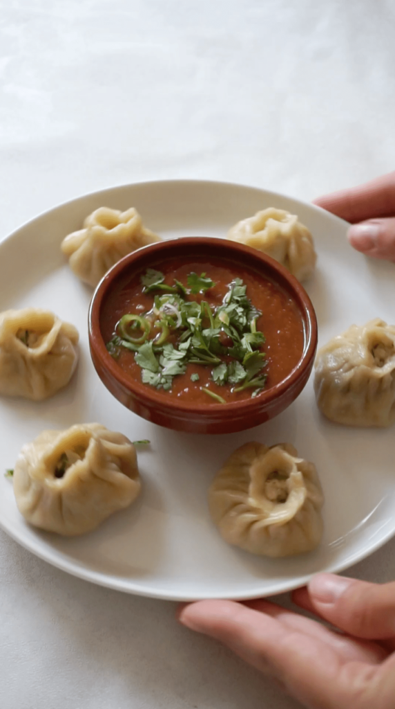

Momo Recipe

Home Page
Description
Momo is a type of dumpling popular in Nepal, Tibet, and parts of India. It’s made with a thin flour dough wrapper filled with minced meat (like chicken, buffalo, or pork) or vegetables, then steamed or fried. Momos are usually served hot with a spicy dipping sauce called achar. They’re soft, juicy, and one of the most loved street foods in Nepal.
Ingredients
- All-purpose flour – for the thin dumpling wrappers.
- Water & salt – to make the dough smooth and pliable.
- Meat (chicken, buffalo, pork, or mutton) – finely minced for the filling.
- Vegetables (cabbage, carrot, onion, spring onion) – chopped finely for veg or mixed momo.
- Garlic & ginger – for aroma and flavor.
- Green chilies – to add a little heat.
- Soy sauce – for umami taste.
- Coriander leaves – fresh, for a herby touch.
- Oil – keeps filling juicy and prevents sticking.
Steps
- Make the dough – Mix flour, salt, and water; knead into a smooth, soft dough. Let it rest.
- Prepare the filling – Combine minced meat/vegetables with onion, garlic, ginger, chilies, coriander, soy sauce, salt, and a little oil.
- Roll wrappers – Divide dough into small balls, roll each into thin circles.
- Fill and shape – Place a spoonful of filling in the center, fold, and pleat the edges to seal.
- Steam – Place momos in a steamer lined with oil or cabbage leaves, steam for 10–12 minutes until cooked.
- Serve hot – Enjoy with spicy tomato achar (dipping sauce).